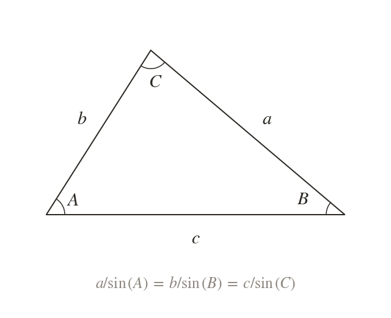
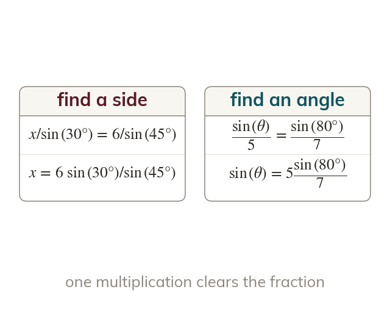
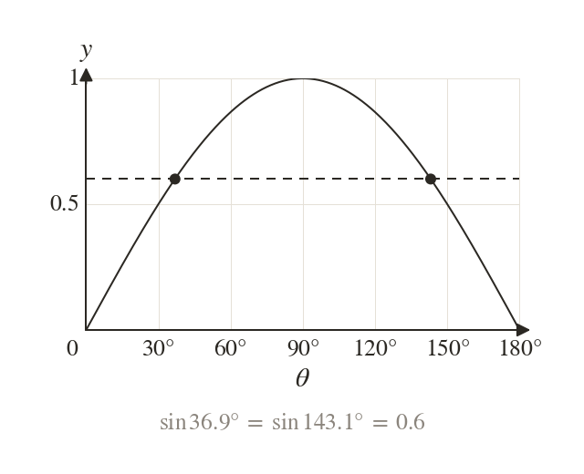
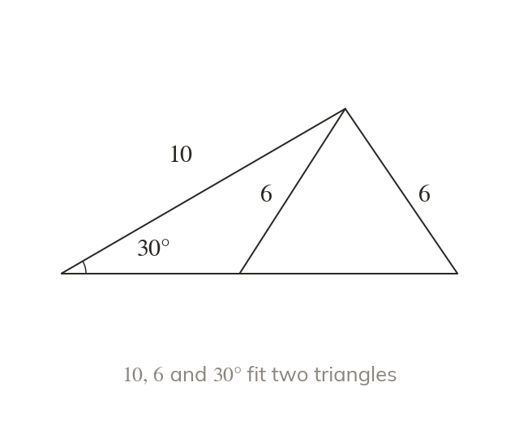

Each side with its opposite angle
In any triangle, each side divided by the sine of the angle opposite it gives the same value. Use the sine rule when a side and its opposite angle are both known.
The sine rule solves a triangle whenever a side and the angle opposite it are known, the cases the cosine rule cannot reach. Its ambiguous case, where one sine gives two angles, returns in the area formula next lesson.
Work down the page at your own pace. Write every answer in your book first, then click to check it.
Read each card, then follow the worked examples one step at a time.

In any triangle, each side divided by the sine of the angle opposite it gives the same value. Use the sine rule when a side and its opposite angle are both known.

To find a side, put the sides on top: . To find an angle, put the sines on top:
Pick an answer. If it's wrong, the feedback tells you which mistake it was.
Read each card, then follow the worked examples one step at a time.

Because an angle found from its sine may have a second value. The calculator gives only the acute one.

The second angle gives a triangle only if it and the known angle add up to less than Then two different triangles fit the same facts.
Pick an answer. If it's wrong, the feedback tells you which mistake it was.
Finished? Next lesson: 9.3 Areas of Triangles.
For each skill, tap the one that is true for you today. Your Revise pages start with anything you mark Not yet.
Your ratings are saved on this device only.
Log in, then search for a code to practise that skill.